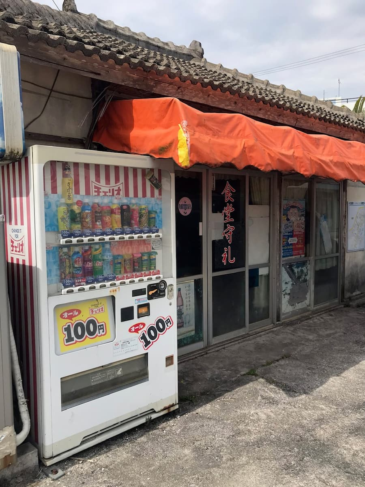
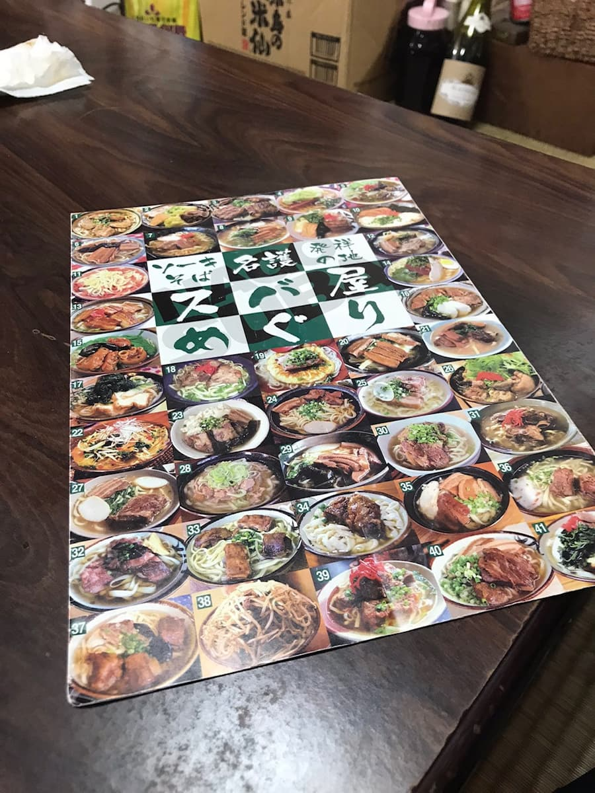
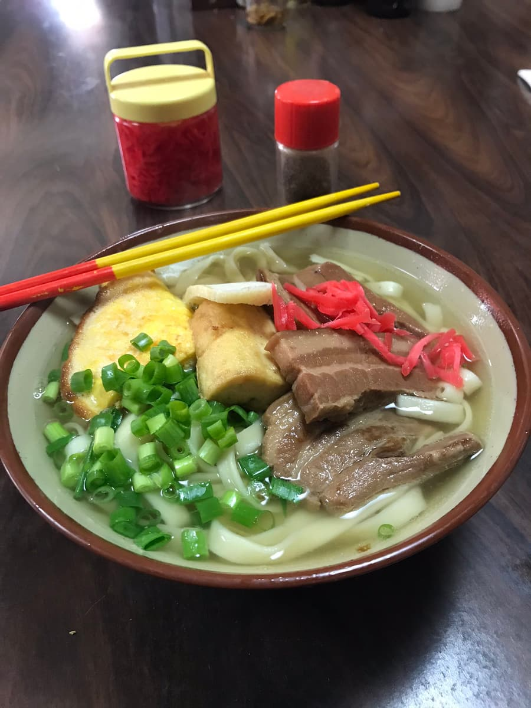

「名護市そばマップ」で紹介されていて2021.3に食べました😄


マップで紹介されていた「そば」を注文。

やさしい鰹ベースのスープに平麺。具も三枚肉、卵焼き、厚揚げとボリュームありますが、500円😁 他店よりもリーズナブルです。
評価（9点/15点）：普通に美味しくリーズナブルです。定食はご飯おかわり自由らしく、こちらもコスパ良いですね😁 名護はヒートゥー（イルカ）が有名でメニューに有りました。今度イルカ料理もチャレンジしてみたいですね。
麺 ：★★★☆☆（3）
スープ：★★★☆☆（3）
具 ：★★★☆☆（3）